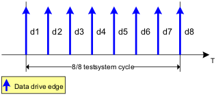
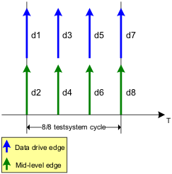
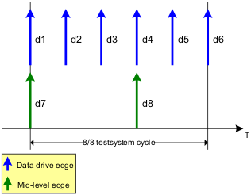

X8 mode, mid-level x4 mode, and mid-level x6 mode
The standard x8 mode looks like shown in the figure below.
x8 mode:

The following figures show the alignment of data drive and mid-level edges for mid-level x4 and mid-level x6 mode.
Mid-level x4 mode:

Mid-level x6 mode:
